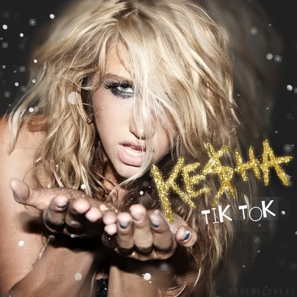

2010
TOP 5 NO MUNDO
Ke$ha
TiK ToK


O começo da música vem de uma experiência pessoal da cantora que acordou rodeada por mulheres lindas. A partir disso, imaginou P Diddy, rapper citado na música, tendo a mesma experiência. Tudo isso, levou ela a começar a escrever a música, que, segundo a própria Kesha, a letra diz respeito à ela e suas experiências de vida. A música passa a mensagem de não deixar ninguém te jogar para baixo.